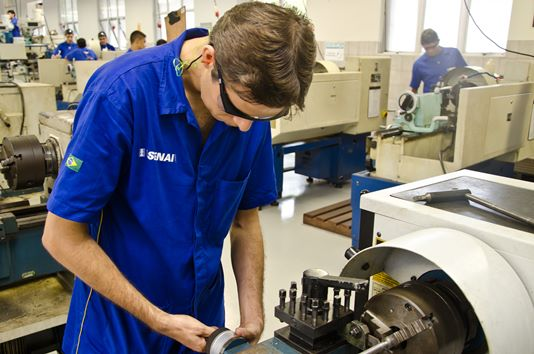
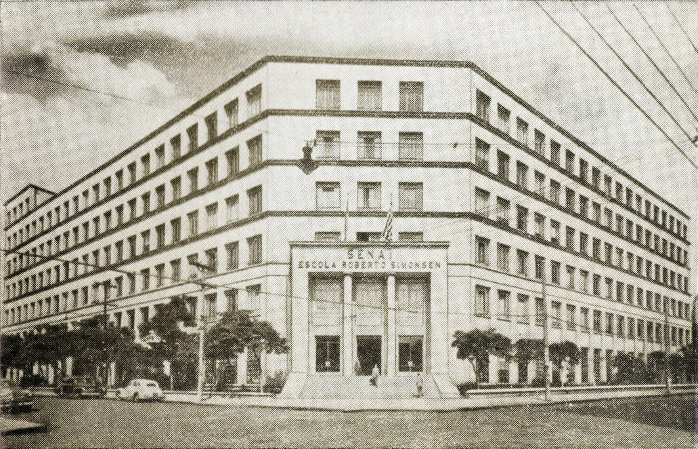
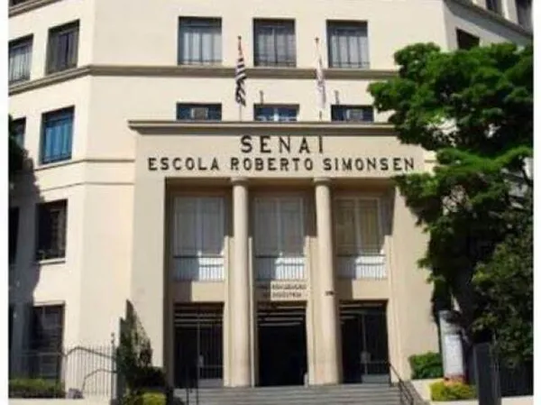
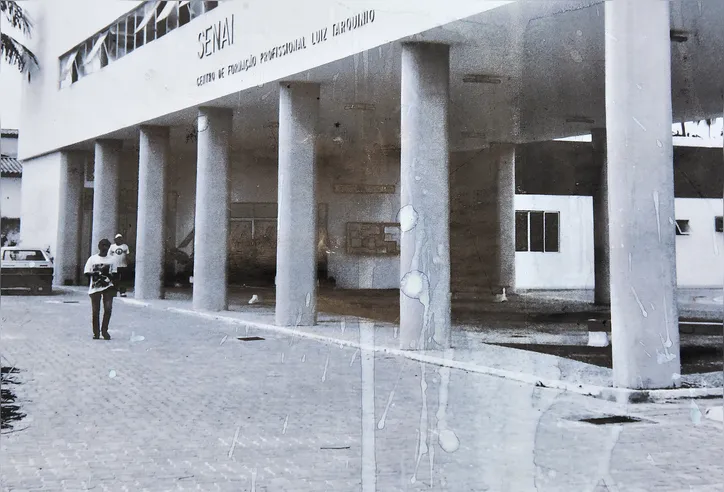
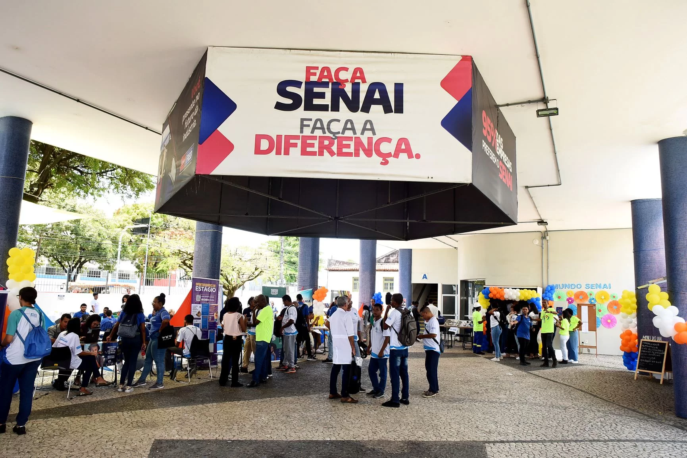
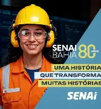

Conheça o SENAI
Nossa História no Brasil (Antes e Depois)
Criado em 22 de janeiro de 1942, o SENAI é uma instituição privada de interesse público, sem fins lucrativos, que apoia os sindicatos da indústria na formação de profissionais qualificados. A primeira unidade inaugurada foi a Escola SENAI Roberto Simonsen, no bairro do Brás, em São Paulo.


O Pioneirismo na Bahia (Antes e Depois)
Na Bahia, a história da educação industrial começou em abril de 1949 com a inauguração da Escola de Aprendizes Luiz Tarquínio, localizada no bairro de Dendezeiros, em Salvador. A unidade continua ativa e foi totalmente modernizada para atender à Indústria 4.0.


80 Anos de SENAI Bahia
No último ano (2025), o SENAI Bahia celebrou um marco histórico: 80 anos de uma trajetória dedicada à educação profissional, à pesquisa aplicada e à inovação. Ao longo dessas oito décadas, milhares de jovens foram formados e a indústria baiana foi impulsionada por profissionais altamente qualificados, consolidando o SENAI como a principal parceira do desenvolvimento do estado.

Aprendizado na Prática
Nossa metodologia é focada na vivência real do ambiente industrial. Os alunos colocam a mão na massa desde o primeiro dia de aula nos nossos laboratórios.
Nosso Corpo Docente
Contamos com uma equipe de profissionais especialistas altamente qualificados e com ampla vivência prática no mercado industrial:
- Prof. Carlos Eduardo Silva: Mestre em Automação Industrial e especialista em sistemas robotizados.
- Profa. Ana Luísa Santos: Engenheira Mecânica com 10 anos de experiência em diagnósticos automotivos eletrônicos.
- Prof. Ricardo Oliveira: Desenvolvedor de Software sênior, focado em metodologias ágeis e Indústria 4.0.
- Profa. Beatrice Pinheiro: Doutora em Engenharia Elétrica, especialista em redes prediais e subestações industriais.
- Prof. André Souza: Especialista em Logística Internacional e gestão estratégica de cadeias de suprimentos.
- Profa. Cláudia Mendes: Mestre em Redes de Computadores e especialista em segurança da informação de infraestruturas críticas.
Infraestrutura de Ponta
O SENAI Bahia, destacando-se através do complexo SENAI CIMATEC, possui uma das maiores infraestruturas de inovação e educação da América Latina:
- Fábrica Modelo: A primeira e única do tipo na América Latina, simulando processos industriais completos.
- Supercomputadores: Estrutura computacional de altíssimo desempenho para pesquisas avançadas.
- Manufatura Aditiva: Laboratórios modernos de Impressão 3D e prototipagem rápida.